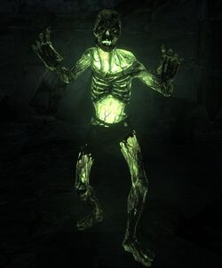
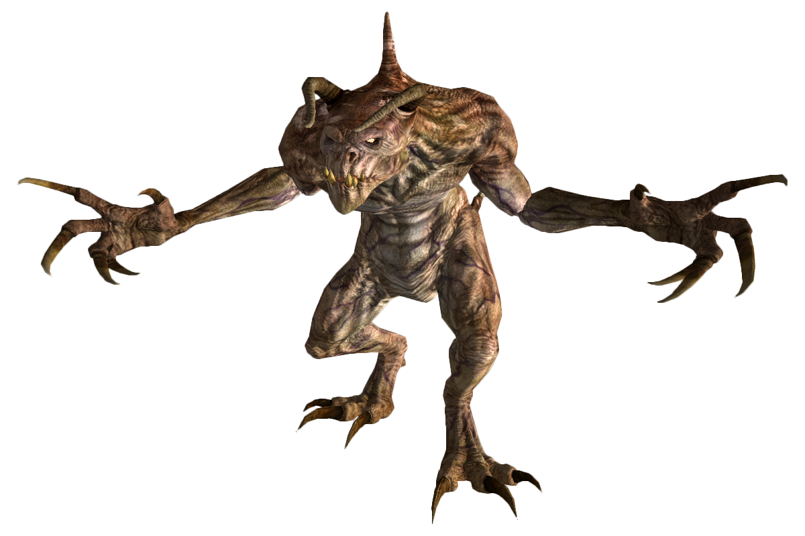
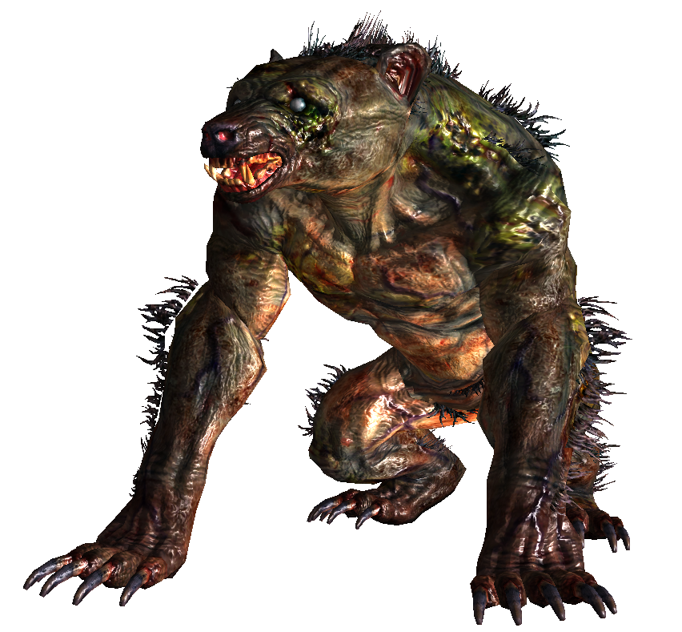

Fallout 3 est un jeu vidéo de rôles et d’action développé et publié par la société Bethesda Softworks. Il est le troisième opus de la série principale des Fallout. Sorti près de dix ans après Fallout 2, il marque la reprise de la licence par un nouveau studio, après la faillite d’Interplay et la dissolution de Black Isle Studios. Il en résulte deux changements majeurs : le jeu passe d’une 3D isométrique vue de dessus à une vraie 3D à la première personne, grâce au moteur de Oblivion, et se rapproche de la conception des jeux de Bethesda, plus orientés action, exploration et avec des quêtes moins complexes.
Fallout 3 se déroule en l’an 2277, 30 ans après l’histoire de Fallout 2 et 200 ans après qu'une guerre nucléaire sino-américaine a dévasté le monde. Le théâtre du jeu se situe aux États-Unis, dans les alentours de Washington (alors que les deux premiers opus se déroulaient en Californie). Le personnage du joueur est un membre de l’abri 101, un abri antiatomique servant les habitants de l'ancienne capitale. Au début du jeu, son père disparaît dans de mystérieuses circonstances ; le superviseur de l’abri devient suspicieux quant aux motivations du personnage et ordonne sa mise à mort, le forçant à s’échapper dans la capitale dévastée à la recherche de son père.
Sur son chemin, le joueur rencontrera de nombreuses factions, disposées ou non à l'aider en fonction des décisions qu'il aura prises. Certaines de ces organisations sont connues depuis les précédents jeux, comme la Confrérie de l’acier, un groupe de survivants convoitant toutes formes de technologies, et l’Enclave, ce qui reste du gouvernement américain.
Le monde futur qui a été ravagé par la guerre nucléaire ressemble à l'avenir tel qu'on l'imaginait dans les années 1950-1960, ajoutant du rétrofuturisme à l'univers des jeux Fallout. Cependant, le look de certains personnages et notamment des raiders (qui ont parfois une crête iroquoise façon punk) fait penser aux années 1970-1980 et aux films post-apocalyptiques type Mad Max.
Les Terres Désolées de Washington sont occupées par un grand nombre de créatures, pour la plupart héritées des deux précédents volets (Fallout et Fallout 2). La majorité des créatures rencontrées dans le jeu sont hostiles, et les interactions avec celles-ci sont inexistantes. L'appellation « créatures » englobe à la fois des humanoïdes (fangeux, goules sauvages, etc.) et des non-humanoïdes (yao-guai, rataupes, etc.).
Voici trois exemples de créatures
  